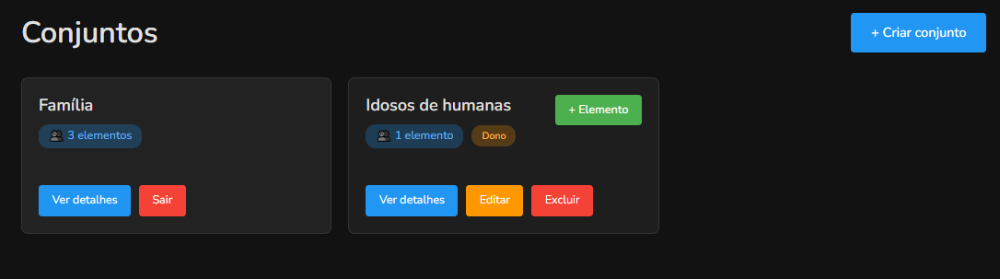
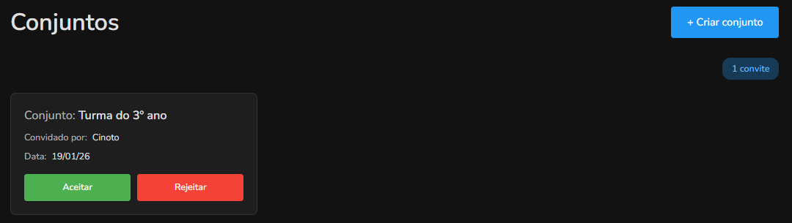

Sobre os conjuntos no Numix
Visão geral
Os conjuntos permitem que você crie grupos com outros usuários e veja rankings específicos apenas dos elementos daquele conjunto. É ideal para criar competições personalizadas!

Para que servem os conjuntos?
A grande vantagem é que você pode comparar seus resultados no Numix com pessoas do mesmo nível que você.
Com os conjuntos você pode comparar seus resultados em cada tipo de operação com grupos específicos de pessoas:
- Família: incentive o aprendizado entre familiares;
- Amigos: compare desempenho com colegas de trabalho ou escola;
- Alunos: professores podem acompanhar o progresso da turma.
Como criar um conjunto
Para criar um novo conjunto, clique no botão "+ Criar conjunto" no topo da página. Você precisará:
1. Dar um nome ao conjunto
Escolha um nome que identifique o grupo, como "Família Silva", "Turma 5A", "Amigos do Numix", etc.
2. Adicionar membros
Digite os e-mails dos usuários que você deseja convidar para participar do conjunto. Os usuários convidados receberão um convite e, ao aceitarem, poderão visualizar o ranking apenas dos elementos do conjunto.
Convites para conjuntos
Ao ser convidado para um conjunto no Numix, verá um aviso no item Conjuntos do menu.
Na página de conjuntos, os convites pendentes aparecem no topo e você pode aceitar ou recusar o convite.

Visualizar rankings de conjuntos
Para ver o ranking de um conjunto específico acesse a página de Rankings e no filtro "Conjunto", selecione o conjunto que deseja ver. Você verá o ranking apenas com os membros daquele conjunto.
Você pode alternar entre o ranking global (todos os usuários) e o ranking de um conjunto a qualquer momento.
Sair de um conjunto
Você pode sair de um conjunto a qualquer momento. Ao sair:
- Você não aparecerá mais nos rankings daquele conjunto;
- Não poderá mais ver os rankings do conjunto;
- Seus recordes gerais não são afetados;
- Você pode ser convidado novamente no futuro.